State Trees — Wildlife AI
Artificial Intelligence Applied to Games
The State Tree is Unreal Engine’s modern hierarchical state machine framework. Unlike Behavior Trees, which traverse a node graph every tick, a State Tree keeps the AI in a set of explicitly named active states, making its current behaviour easy to read and debug. It can also be used for any stateful gameplay logic — not just AI.
In this assignment you will build a Wildlife AI agent with two high-level states — Peaceful and Danger — and use AI Perception to make the agent react when the player enters its sight radius.
1 What is a State Tree?
A State Tree is a general-purpose hierarchical state machine framework introduced in Unreal Engine 5.0. At its core it combines ideas from two established AI patterns: Hierarchical State Machines (HSM) and Behavior Trees (BT). Like a Behavior Tree it can host complex, reactive logic for an AI agent. Like a state machine it has explicit named states that are clearly active or inactive, making the AI’s current behaviour straightforward to read and debug.
State Tree was used for AI in The Matrix Awakens demo and City Sample, but its design is general enough for any stateful data: fighting game combo selectors, animation state selection, quest logic, and more.
1.1 State Tree vs. Behavior Tree
Behavior Trees are well-established in Unreal Engine and remain fully supported. State Trees offer several advantages that make them a better choice for new projects:
Explicit states. Instead of traversing a tree of composites and decorators every tick, the AI is always in a known set of active states. This is easier to reason about and debug.
Hierarchical grouping. A state can have child states. When a parent state is active, exactly one of its children is also active. This naturally models complex behaviour such as Combat → (Attacking | Flanking | Retreating) without duplicating logic across multiple BT branches.
Data-oriented design. The State Tree separates data (context objects, parameters, evaluator/task outputs) from logic (tasks and conditions). Sharing and reusing components between trees is much simpler as a result.
Not AI-only. Behavior Trees are tightly coupled to the AI Controller / Pawn system. State Trees can be attached to any actor or component, or run standalone — making them useful for door logic, quest state, animation state, or anything else that has discrete modes.
Better performance. State Trees compile their logic into a flat data structure at save time, which is very efficient to execute at runtime.
| Feature | Behavior Tree | State Tree |
|---|---|---|
| Execution model | Traverses node graph every tick | Stays in active states; re-evaluates only on events |
| State visibility | Implicit (current node path) | Explicit named states |
| Hierarchy | Composites + decorators | Parent/child states |
| Data sharing | Blackboard (key-value store) | Typed output bindings between tasks |
| Non-AI use | Not practical | Fully supported |
| Introduced | UE 4 | UE 5.0 |
1.2 Architecture Overview
A State Tree is built from the following components:
| Component | Description |
|---|---|
| Schema | Defines what external data (context objects) is available to the tree |
| Parameters | Public inputs you can set per instance — like Blueprint variables |
| Global Tasks | Tasks that run for the lifetime of the tree (registering listeners, caching data) |
| Evaluators | (Largely phased out in UE 5.4+ in favour of Global Tasks) Compute data each tick |
| States | Named nodes in the hierarchy; each state can hold tasks and transitions |
| Enter Conditions | Conditions checked before a state is allowed to become active |
| Tasks | Nodes that execute logic while their state is active |
| Transitions | Rules that decide which state becomes active next |
1.3 State Types
Every state in the tree has a Type property:
| Type | Description |
|---|---|
| State | Standard state — can have tasks, enter conditions, and transitions |
| Group | Cannot have tasks, only child states — useful as a logical container |
| Linked | Links to a Subtree state within the same asset; execution keeps the current branch of states in the hierarchy |
| Linked Asset | Runs another State Tree asset inside the current one |
| Subtree | A state that can be linked to from a Linked state; can have tasks, children, conditions, and transitions |
1.4 State Selection — How the Tree Decides Which State to Enter
State selection works as a depth-first search starting from Root:
- The tree starts at the Root node on startup.
- Child nodes are evaluated in order from top to bottom.
- If a child state has Enter Conditions, they are all checked. If they pass and the state is a leaf, it becomes active. If it is an intermediate state, the tree continues evaluating that state’s children.
- If the enter conditions fail, the next sibling state is tried.
- If all children of a state fail to be entered, the tree reports Tree Failed.
- When changing states, the tasks and states are exited from leaf to root of the previous state, and the enter events happen from root to leaf of the new state. The tree only exits states up to the first shared state between the previously running state and the new target state.
Important: if an enter condition relies on the output of a task higher in the hierarchy, the State Tree will not run that prerequisite task first. The enter condition will simply fail because the input has no value yet.
You can change a state’s Selection Behavior to alter this default:
| Selection Behavior | Description |
|---|---|
| Try Select Children In Order | Default — evaluate children top to bottom |
| Try Select Children at Random | Reshuffles the order of child states and tries to enter the first one |
| Try Select Children with Highest Utility (UE 5.5+) | Enters the child state with the highest utility consideration score |
| Try Select Children at Random Weighted by Utility (UE 5.5+) | Randomly chooses a child to enter, with probability based on each state’s normalised utility consideration score |
| Try Enter | Allow an intermediate state to be entered even if it has leaf children |
| Try Follow Transitions | Follow the state’s transitions instead of entering it directly |
| None | This state can never be selected directly |
Utility Selection (UE 5.5+): States can have Utility Considerations — float curves and inputs that produce a score. Multiple considerations can be chained together to build a more complex scoring function. This enables weighted random and highest-score selection behaviours as an alternative to simple top-to-bottom priority ordering.
1.5 Transition Selection — How the Tree Decides Where to Go Next
When a task completes or an event fires, the State Tree evaluates transitions in order from the leaf state up to the root. The first transition that passes is used. This means transitions can be placed on intermediate (parent) states and they will fire for any of their active children — as long as those children do not have a more specific transition that fires first.
Key insight: a task that finishes (succeeded or failed) on any active state will attempt to trigger transitions — not just the leaf state. For example, a task on the Root state that succeeds will try to trigger transitions on Root. Design accordingly.
1.6 Task Lifecycle
Every task has three override points:
| Function | When it runs | Typical use |
|---|---|---|
EnterState |
Once, when the state becomes active | Initialise, get a location, start a move |
Tick |
Every frame while the state is active | Poll a condition, track a target |
ExitState |
Once, when the state is left | Stop movement, clean up |
Each function must return a status from the EStateTreeRunStatus enum:
| Return value | Meaning |
|---|---|
Running |
Stay in this state, keep ticking |
Succeeded |
Task is done successfully — triggers On Task Succeeded / On State Completed transitions |
Failed |
Task failed — triggers On Task Failed / On State Completed transitions |
Tip: not all tasks need to call
FinishTaskunless they should force a re-evaluation of the tree. For example, a task that gets a location to pass toMoveToshould returnSucceededfromEnterStateand not tick, soMoveTocan do its job uninterrupted.
1.6.1 Task Completion Control (UE 5.6+)
In UE 5.6 the behaviour of task completion and transitions changed significantly:
- Each task now has a clipboard icon to its left in the Tasks section of the Details panel. A blue icon means the task is considered for completion (it can trigger transitions). A grey icon means it is not used for completion. Some built-in tasks, such as the
Debug Text Task, have this option permanently disabled. - Each state can now use one of two Task Completion modes:
- Any (default) — the first task considered for completion that finishes triggers transitions. This is the classic behaviour.
- All — the state waits for every task marked for completion to finish successfully before triggering transitions. If any task fails, the state transitions with a failed status immediately.
This makes it possible to run multiple tasks in parallel and only continue when all of them are done — without needing extra logic.
1.7 Property Categories
Every variable on a task or condition must be assigned a Category that tells the State Tree how to handle it:
| Category | Meaning |
|---|---|
Context |
Automatically bound to best-fitting context data; can be overridden manually |
Input |
Must be bound to another task’s output or a parameter for the tree to compile |
Output |
Exposes a value that later tasks or conditions can bind to. Note: you cannot bind an Output back to a parameter to store its value |
Parameter |
Optional — can be set directly or bound; shown prominently in the Details panel |
| (none) | Optional binding — can also be set to a direct value |
1.8 Property References
Property References allow writing data back to the tree’s parameters from inside a task or condition, similar to how Blackboard keys work in Behavior Trees.
- UE 5.4 (C++ only): use
FStateTreePropertyRefin your task class. - UE 5.5+ (Blueprint): use the
FStateTreeBlueprintPropertyRefstruct. The Blueprint version can read parameters but does not support writing back to them the way the C++ version does.
2 Plugin Setup
Go to Edit → Plugins, search for State Tree, and enable both:
- StateTree — core framework and editor
- Gameplay StateTree — provides the
StateTreeAIComponentand related gameplay integration
Restart the editor when prompted.
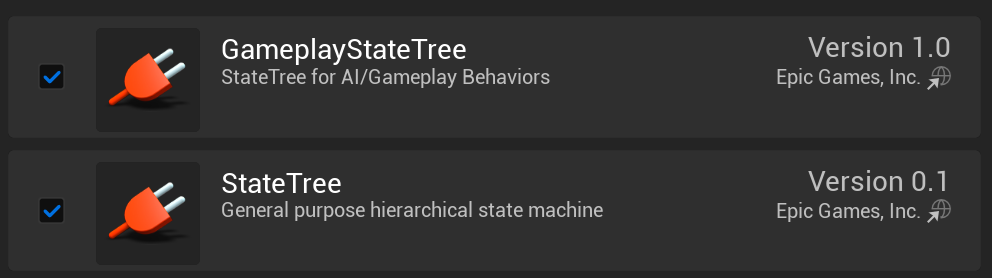
3 Key Concepts
Before building, it is worth understanding the main terms used in the State Tree editor.
Schema — sets which context objects (actors, components) are automatically available inside the tree. For AI use, choose StateTree AI Component.
Context — the data exposed by the schema that every task and condition can bind to without extra wiring. With the AI Component schema, you automatically get Actor (the controlled pawn) and AIController.
Parameters — public values you can set per tree instance, similar to Blueprint variables.
Global Tasks — tasks that run for the lifetime of the tree, useful for registering event listeners or caching data. Note that Evaluators have largely been phased out in favour of Global Tasks in UE 5.4+.
State — a named node. States can be of type State (can have tasks), Group (cannot have tasks, only children), Linked (jumps to a subtree within the same asset), or Linked Asset (runs another State Tree asset).
Enter Conditions — a list of conditions that must all pass before a state can become active.
Tasks — nodes that run logic while their state is active (EnterState, Tick, ExitState). Multiple tasks can run simultaneously on the same state.
Transitions — rules that decide what happens when a task finishes or an event fires. Transitions are evaluated from the leaf state up to the root, and the first one that passes wins.
Property Categories — every task/condition variable has a category:
| Category | Meaning |
|---|---|
Context |
Automatically bound to matching context data |
Input |
Must be bound to compile; can also be set manually |
Output |
Exposes data that later tasks/conditions can bind to |
| (none) | Optional binding; can be set directly |
4 Project Setup
Create a new project from the Third Person template. In the Content Browser under ThirdPerson/Blueprints, create a new folder called AI. All assets for this assignment go inside that folder.
4.1 Create the AI NPC
Create a new Blueprint Class → select Character → name it NPC_Deer.
Open the NPC_Deer blueprint. For the Skeletal Mesh Asset select the SK_DeerDoe and rotate it propperly, and also adjust its relative location accordingly. Finally, adjust the Capsule Radius.
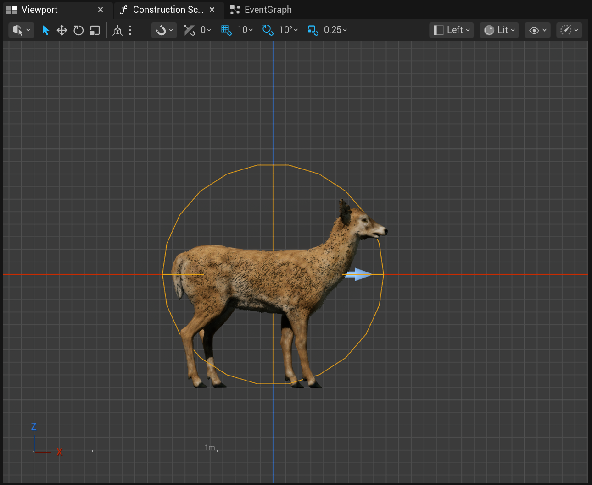
Now, select the AnimBP_DeerDoe as the Anim Class.
4.2 Create the AI Controller
Create a new Blueprint Class → search All Classes → select DetourCrowdAIController → name it AIC_Wildlife.
Using
DetourCrowdAIControllerinstead of plainAIControllergives the AI optional crowd avoidance for free when multiple agents are in the level.
4.3 Implement the Team Agent Interface (C++)
⚠️ This step is the most common reason Danger/Perception never triggers. The AI Sight perception system only flags actors as Enemies if they belong to a different team. Without implementing
IGenericTeamAgentInterfaceon the player controller and character, the AI perceives the player as neutral (same team 0), and Detect Enemies will never fire.Blueprint-only shortcut: If you do not want to write C++, open the AI Perception component’s Sight Config, expand Detection by Affiliation, and enable all three options (Enemies, Neutrals, and Friendlies). The AI will then perceive every actor regardless of team. You can then skip the rest of this section.
If you choose the C++ route (recommended), open your project’s .Build.cs file (under Source/{ProjectName}/) and make sure that "AIModule" is present on the PublicDependencyModuleNames:
PublicDependencyModuleNames.AddRange(new string[] {
"Core",
"CoreUObject",
"Engine",
"InputCore",
"EnhancedInput",
"AIModule",
"StateTreeModule",
"GameplayStateTreeModule",
"UMG",
"Slate"
});Player Controller — header: include the interface header and inherit from it:
#include "GenericTeamAgentInterface.h"
UCLASS(abstract)
class AStateTreePlayerController : public APlayerController,
public IGenericTeamAgentInterface
{
// ...
public:
virtual void SetGenericTeamId(const FGenericTeamId& NewTeamID) override;
virtual FGenericTeamId GetGenericTeamId() const override { return TeamId; }
// Constructor
AStateTreePlayerController(const FObjectInitializer& ObjectInitializer);
private:
FGenericTeamId TeamId;
};Player Controller — .cpp: set Team ID 2 in the constructor so the player is on a different team from the AI (which defaults to team 255):
AStateTreePlayerController::AStateTreePlayerController(const FObjectInitializer& ObjectInitializer) : Super(ObjectInitializer)
{
SetGenericTeamId(FGenericTeamId(2));
}
void AStateTreePlayerController::SetGenericTeamId(const FGenericTeamId& NewTeamID)
{
if (TeamId != NewTeamID)
{
TeamId = NewTeamID;
}
}Character — header: also inherit from IGenericTeamAgentInterface and override PossessedBy:
virtual void PossessedBy(AController* NewController) override;
// IGenericTeamAgentInterface
virtual void SetGenericTeamId(const FGenericTeamId& TeamID) override;
virtual FGenericTeamId GetGenericTeamId() const override { return TeamId; }
private:
FGenericTeamId TeamId;Character — .cpp: sync the team ID from the controller when possessed:
void AStateTreeCharacter::PossessedBy(AController* NewController)
{
Super::PossessedBy(NewController);
if (IGenericTeamAgentInterface* TeamProvider =
Cast<IGenericTeamAgentInterface>(NewController))
{
TeamId = TeamProvider->GetGenericTeamId();
}
}
void AStateTreeCharacter::SetGenericTeamId(const FGenericTeamId& TeamID)
{
// Set externally only through PossessedBy
}Since the character only updates the team ID when being possessed by a controller, there is no need to manually set the team ID in the constructor.
Compile the project.
5 Creating the State Tree Asset
In the Content Browser → AI folder, right-click and choose Artificial Intelligence → State Tree. Name it ST_Wildlife.
When prompted to pick a schema, choose StateTree AI Component. This schema exposes two context properties automatically:
AIController(type: AIController)Actor(type: Pawn — the pawn being controlled)
You can narrow both to your specific classes later. Open ST_Wildlife. In the Asset Details panel on the left, set:
- AIController Class →
AIC_Wildlife - Context Actor Class →
NPC_Deer
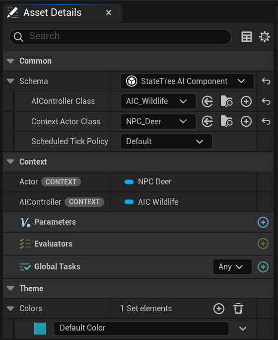
6 Building the State Hierarchy
The wildlife agent will have two behaviours:
- Peaceful — the animal is calm: wanders, grazes, idles
- Danger — the animal has spotted a threat: flees, assesses the situation, watches the threat
This maps to the following hierarchy:
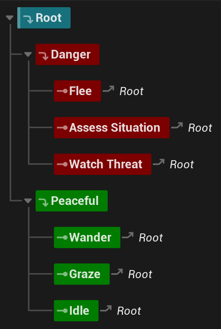
Add states using the + Add State button. Drag states to rearrange them. Use the Color property in the Details panel to assign theme colours: create a Danger theme (red) and a Peaceful theme (green) in the Theme → Colors section of the Asset Details.
Important: Danger is listed before Peaceful under Root. The tree evaluates children top-to-bottom, so Danger is checked first. Later, we will add an Enter Condition to Danger so it only activates when a hostile is perceived.
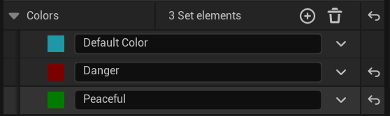
Implicit transitions: notice that when you first add leaf states, they automatically have a transition back to Root. This is a safety measure to prevent the tree from getting stuck in a single branch if no transitions are configured. As soon as you add any explicit transition without a condition to a state, this automatic transition to Root is removed.
⚠️ Disable Danger for now — right-click the Danger state and uncheck State Enabled. This prevents the tree from entering Danger during the initial testing phase. Remember to re-enable it in Section 7.
7 Wander State — First Task
States do not do anything on their own; tasks provide the behaviour. Select the Wander state and click + Add Task. The engine ships with a built-in Move To task — select it.
Move To needs a destination. The goal for Wander is to move to a random navigable location near the actor. The engine does not provide a “get random location” task, so we will build one.
7.1 Create STTask_GetRandomLocation
In the Content Browser → AI folder, create a new Blueprint Class. In All Classes, search for StateTreeTaskBlueprintBase and select it. Name it STTask_GetRandomLocation.
Open it. Add the following variables:
| Name | Type | Category | Instance Editable |
|---|---|---|---|
Actor |
Actor Object Reference | Context | ✓ |
Location |
Vector | Output | ✓ |
Distance Away |
Float | Parameter | ✓ (default 500.0) |
Setting a variable’s Category to Context tells StateTree to try to bind it automatically from the context. Setting it to Output means other tasks can bind their inputs to this variable’s value.
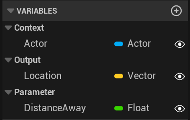
In My Blueprint → Functions → Override, override EnterState. In the event graph:
- From the
Actorvariable, call Get Actor Location to get the origin. - Feed it into GetRandomLocationInNavigableRadius with
Distance Awayas the radius. - Store the result in
Location.
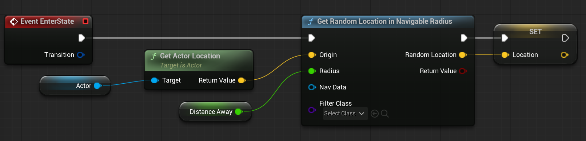
Compile and Save.
7.2 Wire the Two Tasks Together
Back in ST_Wildlife, with the Wander state selected:
- Click + Add Task and add STTask_GetRandomLocation before Move To (use the insert arrow).
- In the Move To task, click the binding icon next to Destination and bind it to
STTask Get Random Location → Location.
The Wander state’s task list should now look like this — STTask Get Random Location feeds its Location output directly into Move To’s Destination:
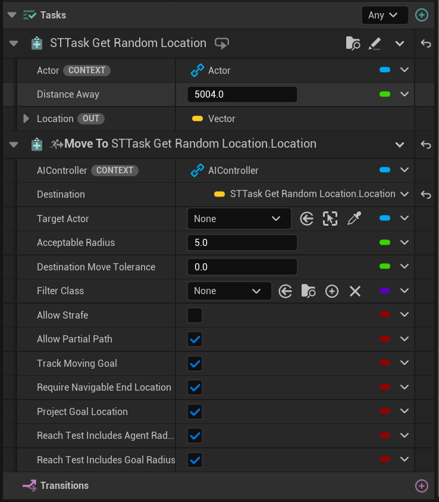
8 Testing — First Run
8.1 Create the AI Controller Blueprint
Open AIC_Wildlife. Add a new component of type StateTreeAI and name it StateTreeAI. In the Details panel, set the State Tree asset to ST_Wildlife.
In the Event Graph, add Event BeginPlay → Start Logic (StateTreeAI). This starts the tree when the controller possesses the pawn.
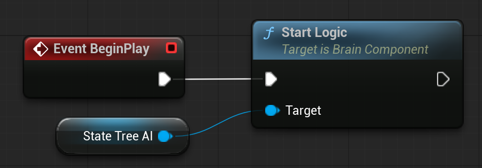
8.2 Set Up the Test Level
Create a new level (File → New Level → Basic). Add a Nav Mesh Bounds Volume that covers the floor and save it as WildlifeTest_Lvl.
Place NPC_Deer in the level. In its Details panel, search for “controller” and set AI Controller Class to AIC_Wildlife.
8.3 Configure the State Tree Context
Back in ST_Wildlife, confirm the context classes are set correctly:
- AIController Class →
AIC_Wildlife - Context Actor Class →
NPC_Deer
Hit Play. The character should walk to a nearby random location and then stop (because there are no transitions yet). Small victory!
9 Transitions for Peaceful States
Running once is a start, but the AI should cycle through Wander → Graze → Idle and repeat.
9.1 Wander Transitions
Select Wander and add two transitions in the Details panel:
| Trigger | Transition To |
|---|---|
| On State Succeeded | Graze |
| On State Failed | Root |
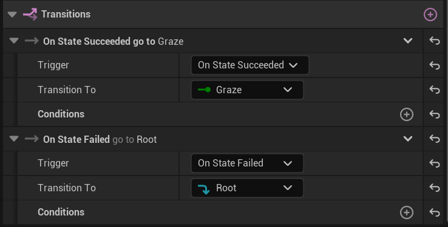
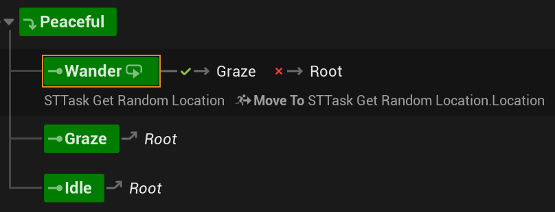
9.2 Graze — Adding a Delay Task
Select Graze and add a Delay Task with Duration 3.0. Also add a Debug Text Task with Text = “Grazing”, Font Scale = 2.0, and bind Reference Actor to the context Actor. Add the transition:
| Trigger | Transition To |
|---|---|
| On State Completed | Idle |
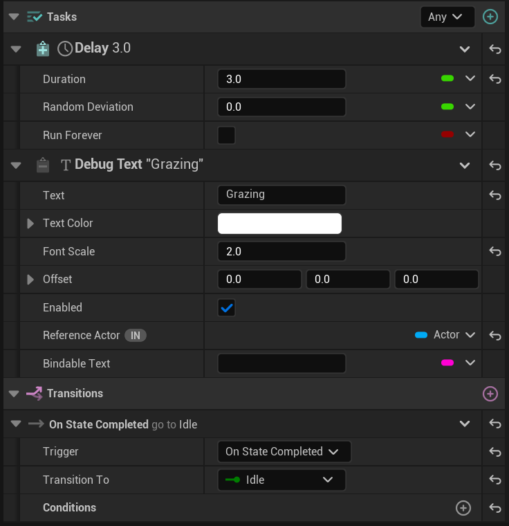
9.3 Idle — Short Pause Before Repeating
Select Idle and add a Delay Task with Duration 1.0 and Random Deviation 1.0. Add the transition:
| Trigger | Transition To |
|---|---|
| On State Completed | Root |
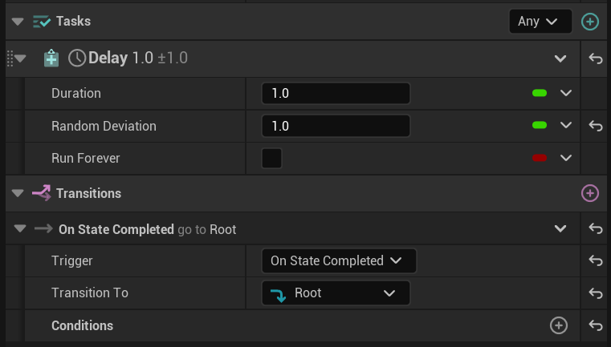
The full Peaceful loop is now: Wander → Graze → Idle → (back to Root → Peaceful → Wander).
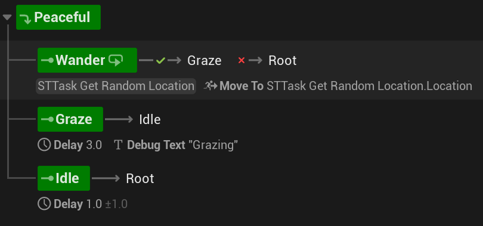
Hit Play again. The character should now cycle through wandering and grazing indefinitely.
10 Reactive Danger Behaviour with AI Perception
This section makes the agent react to the player. It has several steps that must all be completed — skipping any one of them is the most common reason the Danger state never activates.
10.1 Step 1 — Add AI Perception to AIC_Wildlife
Open AIC_Wildlife and add the AI Perception component. Re-select the component in the Components panel to see its Details. Under Senses Config, add a new element and choose AI Sight Config. Configure it as follows:
| Property | Value |
|---|---|
| Sight Radius | 1000.0 |
| Lose Sight Radius | 1500.0 |
| Peripheral Vision Half Angle | 60.0° |
| Detect Enemies | ✓ |
| Detect Neutrals | ✗ |
| Detect Friendlies | ✗ |
| Max Age | 5.0 s |
⚠️ If you skipped the C++ Team Agent Interface step, enable all three Detection by Affiliation options here instead. If only Detect Enemies is checked and the player is not on a different team, the AI will never perceive anything. Additionally, when using the Blueprint-only route you will need to use Get Currently Perceived Actors instead of Get Perceived Hostile Actors, and manually filter the array to exclude other wildlife agents — otherwise the AI will react to its own kind as if they were threats.
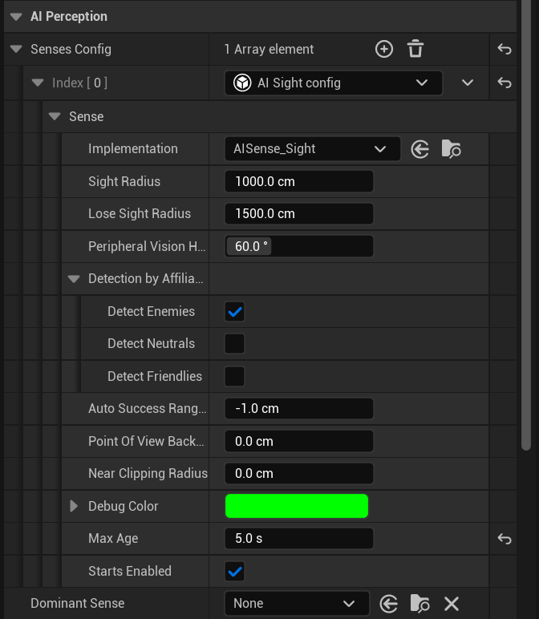
Compile and Save AIC_Wildlife.
10.2 Step 2 — Create the Gameplay Tag
The State Tree communicates with the outside world through Gameplay Tags. We need a tag to signal “danger detected”.
Go to Edit → Project Settings → GameplayTags and add the tag: StateTree.Wildlife.Danger
⚠️ If this tag does not exist, the
Send State Tree Eventnode will do nothing and the Danger state will never activate.
10.3 Step 3 — Add the Danger Transition to Peaceful
Open ST_Wildlife and select the Peaceful state. Add a new transition:
| Property | Value |
|---|---|
| Trigger | On Event |
| Event Tag | StateTree.Wildlife.Danger |
| Transition To | Danger |
This transition is placed on Peaceful (an intermediate state) so it fires regardless of which Peaceful child state is currently active.
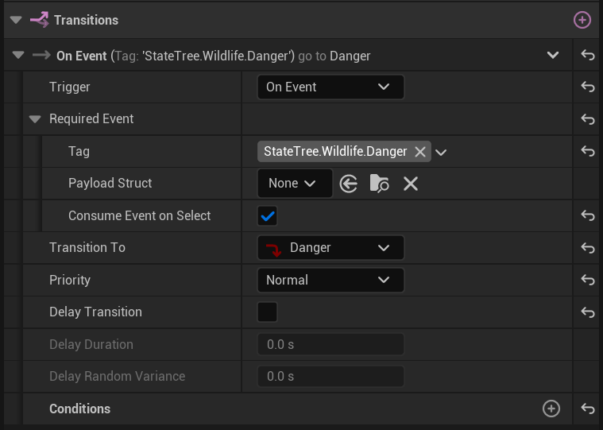
10.4 Step 4 — Send the State Tree Event from the AI Controller
Open AIC_Wildlife. Select the AI Perception component. In the Details panel, scroll to Events and click + next to On Target Perception Info Updated.
In the event graph, implement the following logic:
- Split the
UpdateInfostruct. - Check that
TargetIs Valid using a Branch. - Split the
Stimulusstruct and check Successfully Sensed. - If true, set a public instance-editable variable
Perceived Threat(type: Actor) to theTargetactor. - Call Send State Tree Event — set
Targetto theStateTreeAIcomponent andEventto a new State Tree Event with Tag = StateTree.Wildlife.Danger and Origin = AI Controller (self).
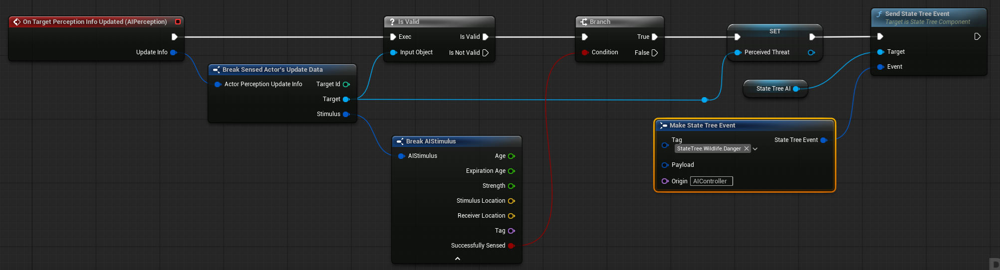
⚠️ The
Send State Tree Eventnode’s Target must be theStateTreeAIcomponent on the controller, not the actor. If you wire it to the wrong target, the event will be sent but the tree will never receive it.
10.5 Step 5 — Re-enable the Danger State
⚠️ This is the other most common reason Danger never activates. Earlier (Section 4), we disabled the Danger state for testing. You must re-enable it now.
Right-click the Danger state in the tree and check State Enabled. The state should no longer appear greyed out.
10.6 Step 6 — Add an Enter Condition to Danger
To prevent Danger from triggering on startup (before anything is perceived), add an Enter Condition to the Danger state. We need a condition that checks whether the AI controller currently has any perceived hostile actors.
Create a new Blueprint Class with parent StateTreeConditionBlueprintBase. Name it STCond_HasPerceivedHostiles.
Add one variable:
| Name | Type | Category |
|---|---|---|
AIController |
AIController Object Reference | Context |
Override Receive Test Condition. In the function graph:
- Get the
AIController. - Get its AI Perception Component (cast if needed). Check
Is Valid. - If valid, call Get Perceived Hostile Actors and check Is NOT Empty.
- Return the result.
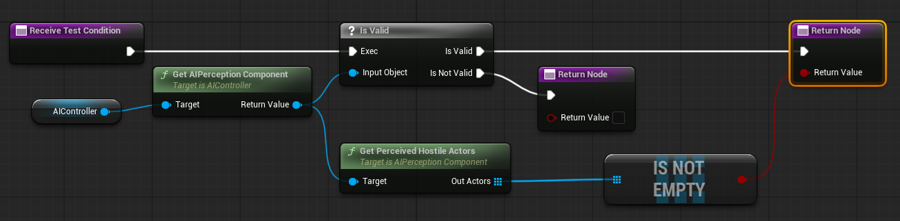
Back in ST_Wildlife, select Danger and add the condition STCond_HasPerceivedHostiles as an Enter Condition.
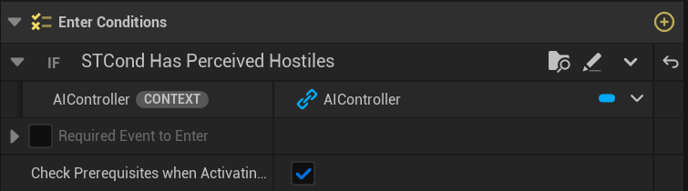
11 Danger Behaviour — Tasks
11.1 Flee State
Create a new Blueprint class from StateTreeTaskBlueprintBase. Name it STTask_GetFleeLocation.
Add these variables:
| Name | Type | Category |
|---|---|---|
Actor |
Actor Object Reference | Context |
AIController |
AIController Object Reference | Context |
Flee Location |
Vector | Output |
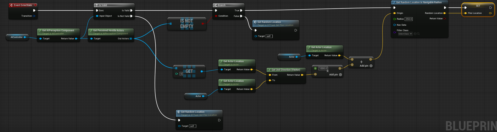
Override EnterState:
- Get the
AIControllerand its AI Perception component. Check valid. - Call Get Perceived Hostile Actors and check NOT empty.
- If there are hostiles, get the first actor’s location.
- Calculate the direction from the first hostile to the context
Actor(unit direction vector) and multiply by 1000. - Add the result to the
Actor’s location to get a flee destination. - Use that as the origin for GetRandomLocationInNavigableRadius (radius 250) and store the result in
Flee Location. - Create a fallback function GetRandomLocation that calls
GetRandomLocationInNavigableRadiuswith radius 2000 around the actor, for when the perception array is empty.
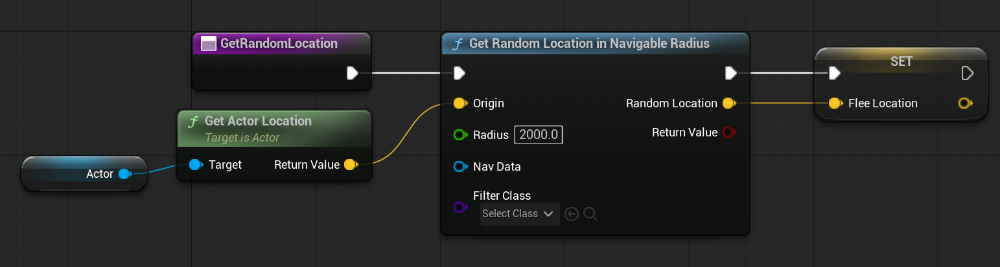
In ST_Wildlife, select the Flee state and add: - STTask_GetFleeLocation - Move To — bind Destination to STTask_GetFleeLocation → Flee Location
Add a transition: On State Completed → Assess Situation
11.2 Assess Situation State
This state gives the animal a brief pause to decide whether it is safe. Add a Delay Task with Duration 0.2.
Create a custom condition called STCond_DistanceBetweenActors (parent: StateTreeConditionBlueprintBase):
- Variables:
First Actor(Actor, Input),Second Actor(Actor, Input),Distance(float, public) - Override Receive Test Condition: get locations of both actors, calculate
Distance Squared (Vector), and return whether it is>Distance^2.
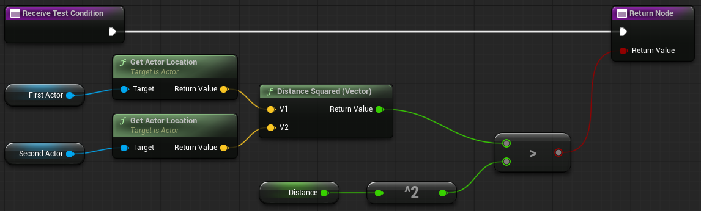
Add two transitions to Assess Situation (order matters — first transition that passes wins):
| Trigger | Transition To | Condition |
|---|---|---|
| On State Completed | Watch Threat | STCond_DistanceBetweenActors: First Actor = context Actor, Second Actor = AIC_Wildlife.PerceivedThreat, Distance = 1000 |
| On State Completed | Flee | (none — fallback) |
11.3 Watch Threat State
The animal watches the threat and waits to see if it moves away. Add: - Delay Task — Duration 5.0, Random Deviation 2.0 - STTask_FocusOnHostile (see below)
Add transitions:
| Trigger | Transition To |
|---|---|
| On State Completed | Peaceful |
On Event StateTree.Wildlife.Danger |
Flee |
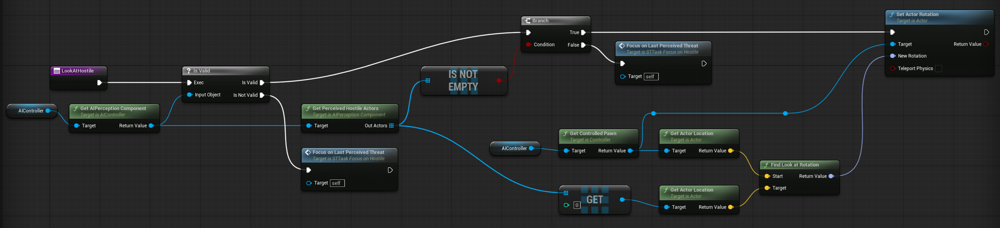
STTask_FocusOnHostile — create from StateTreeTaskBlueprintBase:
- Add Context variable
AIController. - Override EnterState: cast
AIControllertoAIC_Wildlife→ getPerceivedThreat→ if valid, use Find Look At Rotation + Set Actor Rotation on the controlled pawn to face the threat. - Add a Focus on Last Perceived Threat helper function that handles the case when perception is lost: if
PerceivedThreatis still valid, face it; otherwise callFinishTaskwith Succeeded = false to trigger the failure branch.
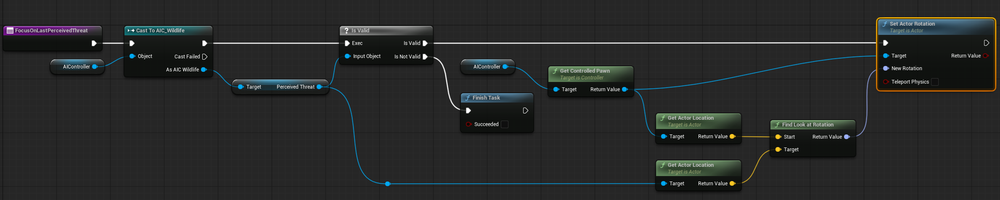
12 Final Checklist Before Testing
Before hitting Play, go through this list:
13 Testing
Open WildlifeTest_Lvl and hit Play. The wildlife character should start wandering peacefully. Walk your player within 1000 units of the AI — it should run away from you, pause to assess the situation, then either continue fleeing or stop to watch you.
13.1 Debugging with the Gameplay Debugger
Press the apostrophe key (') to open the AI debug overlay. Use NumPad 4 to see the AI Perception cone and detected actors. Look for the active State Tree states listed under Brain Component.

If the Danger state never activates, check the perception section: if no actors appear as detected, the Team Interface is not set up correctly. If actors appear but the tree stays in Peaceful, check that the Gameplay Tag exists and the Send State Tree Event node is wired to the StateTreeAI component.
14 Summary
In this assignment you built a Wildlife AI agent using Unreal Engine’s State Tree system:
- Defined a hierarchical state structure with Peaceful and Danger parent states
- Implemented the Peaceful cycle (Wander → Graze → Idle) using built-in and custom tasks
- Set up AI Perception with the correct sight configuration and team detection
- Implemented
IGenericTeamAgentInterfacein C++ to distinguish hostile actors - Sent Gameplay Tag events from the AI Controller to trigger state transitions
- Created custom Blueprint Tasks (
STTask_GetRandomLocation,STTask_GetFleeLocation,STTask_FocusOnHostile) and Conditions (STCond_DistanceBetweenActors,STCond_HasPerceivedHostiles)
14.1 Next Steps
- Add animations to each state using an Animation Task or Animation Blueprint
- Add more wildlife characters and observe how they interact using crowd avoidance
- Experiment with the Gameplay Debugger to observe real-time state transitions
- Replace the Blueprint perception logic with a Global Task for better performance